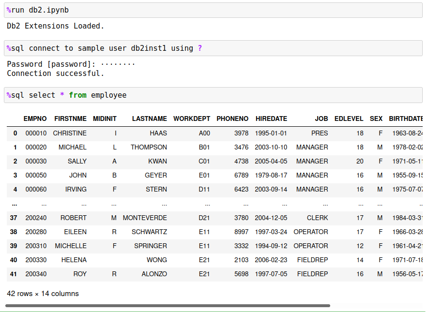

Db2 Jupyter Notebook Magic Commands
Jupyter notebooks include the ability to extend the syntax available within code blocks with a feature called Magic commands. Magic commands start with a percent sign % and provide a variety of features within a notebook environment, including modifying notebook behavior, executing OS commands, extending notebook functionality and with Db2 magic, a way of interacting with a Db2 database.
Once you have loaded the Db2 magic commands into your notebook, you are able to query Db2 tables using standard SQL syntax:

Db2 magic commands provide a number of features that will simplify your use of Db2 databases, including:
- Simplified connections to data sources
- Ability to store result sets into Pandas dataframes
- Create Db2 tables from Pandas dataframes and populate the tables with the data frame contents
- Run the majority of DCL, DDL, and DML statements that are available in Db2
- Create functions, stored procedures, and run a subset of administrative commands
- Allow for parallel execution of SQL queries even on non-warehousing systems
- And much more!
The following sections will describe how to get started with the Db2 magic commands as well as the pre-requisites that are required to run the code in your environment.